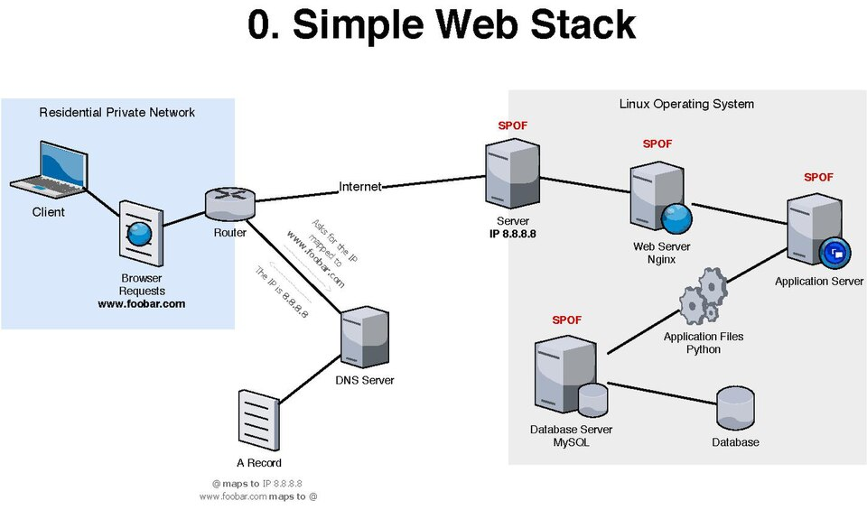

Application security (AppSec) reduces weaknesses in software, its configuration, and the way it is used. The same feature can cross several boundaries: a browser sends a request, an API applies identity and policy, application code queries a database, and the response returns to a user. Think about each boundary and what must be trusted there.

1. Web architecture and trust boundaries
A typical web system has a client (browser or mobile app), a web server or gateway, application services, and data stores. Reverse proxies, caches, identity providers, queues, and third-party services may sit between them. A request's route through these components is an attack surface.
Keep security decisions on the server. Client-side checks improve usability, but users can alter browser code and send requests directly. Validate inputs at service boundaries, authenticate the caller, authorize each requested object and action, and constrain the service's access to downstream systems.
For each feature, ask where input originates, which components handle it, which identity is attached, what data is read or changed, and who can observe the output.
2. HTTP, REST, and APIs
HTTP is a request-response protocol. A request has a method, target, headers, and sometimes a body; a response has a status code, headers, and sometimes a body. HTTPS protects HTTP in transit with TLS, but does not decide whether an action is allowed or whether the endpoint is secure.
- Methods: GET retrieves; POST submits or creates; PUT replaces; PATCH partially updates; DELETE requests removal. Servers must still enforce permissions and safe behavior regardless of method.
- Status: 2xx indicates success, 3xx redirection, 4xx a client-side issue, and 5xx a server-side failure. Avoid leaking stack traces or secrets in error responses.
- Headers: carry metadata such as content type, cache policy, cookies, and authorization. Treat client-provided headers as untrusted input.
REST is an architectural style often used to build resource-oriented APIs. JSON is a common representation, not a security mechanism. An API exposes operations and data to clients; document its endpoints, schemas, authentication, authorization rules, rate limits, and error behavior. Validate types, size, and allowed values on the server, and version and retire endpoints deliberately.
GET /api/v1/orders/4821 HTTP/1.1
Host: shop.example.test
Accept: application/json
Authorization: Bearer <access-token>The identifier in the URL is a reference, not proof that the caller owns that order. The server must check access for this specific object.
3. Authentication, authorization, sessions, and tokens
Authentication establishes who or what is making a request. Authorization decides what that identity may do to a particular resource in the current context. A valid login does not imply permission to every record or operation.
Sessions and cookies
With server-side sessions, the browser holds an opaque session identifier and the server stores session state. Use unpredictable identifiers, rotate them after login or privilege changes, expire them appropriately, and invalidate them on logout and account recovery. Protect session cookies with Secure, HttpOnly, and an appropriate SameSite setting; scope domain and path narrowly.
Cookies are automatically sent by browsers to matching sites, which is useful for sessions and relevant to CSRF. Cookie flags reduce exposure, but they do not replace authorization or all CSRF defenses.
JWT and OAuth
A JWT is a token format that can carry claims. A signed JWT is generally integrity-protected, not encrypted: its payload may be readable. Validate the expected algorithm, signature, issuer, audience, expiry, and other required claims. Keep lifetimes short and plan revocation and key rotation. Do not trust claims merely because the token decodes.
OAuth 2.0 is an authorization framework for delegated access. It lets a client obtain scoped access to a resource with the resource owner's consent. It is not, by itself, a login protocol; OpenID Connect adds an identity layer. Use maintained libraries and established flows, exact redirect URI matching, state and nonce protections where applicable, PKCE for public clients, and narrowly scoped, short-lived tokens. Never put client secrets in browser or mobile code.
Access control
Apply least privilege and deny by default. Check authorization on every request, including background and API routes. Combine roles with object-level and property-level checks: a user may read their own profile but not another user's, and may be allowed to edit a display name but not a billing tier.
4. CORS, CSP, and browser boundaries
CORS is a browser mechanism that controls whether scripts from one origin can read certain responses from another origin. It is not authentication and does not stop non-browser clients. Allow only required origins, methods, and headers; avoid reflecting arbitrary origins. Credentialed requests require careful origin rules and cannot use a wildcard origin.
Content Security Policy (CSP) is a response policy that restricts sources from which a page may load scripts, styles, images, and other resources. A carefully deployed policy can reduce the impact of XSS. Prefer nonce- or hash-based script policies, begin with report-only evaluation where appropriate, and avoid broad allowances such as unrestricted inline scripts. CSP is defense in depth; output encoding remains essential.
For cookie-authenticated state changes, use CSRF tokens or another robust request-origin defense, appropriate SameSite cookies, and avoid state changes on GET. Browsers attach cookies automatically, allowing a malicious site to try to trigger an action in a user's session.
5. SQL and injection
Relational databases organize data into tables and use SQL to query and update it. A dangerous pattern is building a query by concatenating untrusted text. SQL injection occurs when input is interpreted as part of the query syntax rather than only as data.
Use parameterized queries or prepared statements so query structure and values remain separate. Use a database account with only the permissions the application needs. Validate input for business meaning too; escaping strings by hand is not a reliable substitute for parameterization.
# Python example: bind a value; never format user input into SQL
cursor.execute("SELECT id, name FROM users WHERE email = ?", (email,))The placeholder syntax varies by database driver. For sorting or table names, which often cannot be bound as values, choose from a fixed allowlist of identifiers.
6. Common application vulnerabilities
Injection, XSS, and CSRF
- SQL injection: attacker-controlled input changes a database query. Parameterize queries, constrain database privileges, and handle errors safely.
- Cross-site scripting (XSS): untrusted content executes as script in a trusted site's browser context. Use context-aware output encoding, safe templating, and sanitization for intentionally accepted HTML; add CSP as defense in depth.
- Cross-site request forgery (CSRF): a browser is induced to send an authenticated state-changing request. Use anti-CSRF tokens or suitable origin checks, SameSite cookies, and safe HTTP method semantics.
SSRF, access control, and identity
- Server-side request forgery (SSRF): an application fetches an attacker-chosen destination. Prefer destination allowlists, block internal and metadata networks at egress, validate redirects and resolved addresses, and use network segmentation.
- IDOR/BOLA: insecure direct object reference / broken object-level authorization lets a caller access another object's data by changing an identifier. Resolve the object within the caller's authorized scope and test ownership and tenant boundaries.
- Authentication flaws: weak recovery, credential stuffing exposure, missing MFA for high-risk actions, session fixation, or unsafe token handling. Use rate limits, MFA, secure recovery, session rotation, and monitoring.
- Authorization flaws: missing function-level, object-level, or field-level checks. Enforce policy server-side on every operation and fail closed.
Files, paths, commands, and business rules
- File upload: untrusted files may exploit parsers, exhaust storage, overwrite content, or execute if served unsafely. Enforce size and type limits, inspect content, rename files, store outside executable web paths, and serve with safe content headers and access checks.
- Path traversal: crafted paths escape an intended directory. Map opaque identifiers to files where possible; canonicalize and enforce containment within a fixed base directory.
- Command injection: input changes an operating-system command. Avoid shell invocation; use APIs or argument arrays, fixed executables, strict allowlists, and least privilege.
- Business logic flaws: valid features combine in an unintended way, such as replaying a coupon or skipping a payment step. Define invariants, enforce them on the server, make sensitive operations atomic and idempotent, and test sequences and edge cases.
- API abuse: excessive requests, expensive queries, scraping, credential attacks, or resource exhaustion. Apply per-identity and per-resource quotas, pagination and payload limits, timeouts, abuse detection, and cost-aware controls.
7. OWASP risk maps
The OWASP Top 10 is an awareness list of broad web application risk categories, including broken access control, cryptographic failures, injection, insecure design, security misconfiguration, vulnerable components, authentication failures, integrity failures, logging and monitoring failures, and server-side request forgery. Use the current edition as a conversation and review aid, not as a complete checklist or guarantee of security.
The OWASP API Security Top 10 focuses on API-specific risks. Its themes include broken object-level and function-level authorization, broken authentication, unrestricted resource consumption, sensitive business flows, SSRF, security misconfiguration, inventory management, and unsafe consumption of APIs. Apply these themes to endpoint inventory, data ownership, quotas, and third-party integrations.
For every endpoint, identify the caller, object, action, fields, and resource cost. Then define a positive case and at least one unauthorized or malformed case.
8. Mobile application security
A mobile app is a client running on a device the user controls. It stores data locally, uses operating-system features, communicates with remote APIs, and may receive links or content from other apps. Apply the same server-side authorization rules as for a website, then assess the extra device, platform, and distribution boundaries.
Protect data on the device
- Choose storage by sensitivity: keep secrets out of source code, preferences, ordinary files, logs, and backups. Store only what the app needs; use Android Keystore or Apple Keychain for cryptographic keys and appropriate protected credentials.
- Protect local data: consider device lock state, platform data-protection options, backup and restore behavior, shared storage, screenshots, clipboard, notifications, and cached content. Encryption helps only when keys and access are managed correctly.
- Handle tokens safely: use short-lived, revocable tokens and platform-supported secure storage. Never ship an app-wide client secret: secrets embedded in a distributed app can be extracted.
Use platform features carefully
- Permissions: request the minimum access needed, as late as practical, with a clear user-facing reason. Handle denial and revocation safely.
- Deep links and inter-app communication: validate URLs and input received through intents, URL schemes, universal links, extensions, and exported components. Do not let an untrusted app invoke sensitive actions without authorization.
- WebViews: allow only intended content and origins, disable unnecessary capabilities, avoid exposing native bridges to untrusted pages, and treat JavaScript messages as untrusted input.
- Biometrics: use platform authentication APIs to gate an appropriate local action or key. A biometric prompt is not a replacement for server-side identity, authorization, or secure account recovery.
Secure communication and release
Use platform TLS validation and modern networking libraries; never accept every certificate or hostname. Certificate pinning can reduce some interception risks but adds operational and recovery complexity, so design key rotation and backup pins before adopting it. Obfuscation or root/jailbreak detection may raise the cost of tampering but cannot make a client trustworthy or replace server-side controls.
For each release, review third-party SDKs and permissions, protect signing keys, verify build provenance where available, remove debug features, and plan updates for supported versions. Minimize analytics and crash-report data so diagnostics do not become a second path for leaking sensitive information.
Trace sensitive data from entry to display, local storage, backups, logs, network requests, third-party SDKs, and deletion. Check both an ordinary device and realistic loss, logout, permission-denial, and account-recovery scenarios.
9. Tools and a safe workflow
- Burp Suite: intercept and inspect HTTP traffic, replay requests, and organize findings. Use the browser proxy only with systems and accounts you control or are authorized to assess.
- OWASP ZAP: proxy and passively inspect traffic; its active scanner sends attack-like requests, so run it only against an explicitly authorized test target.
- OWASP MASTG tools: use platform emulators, debuggers, and inspection tools to test a lab app against the Mobile Application Security Testing Guide. Tool recommendations can change; check the current guide.
- MobSF: use a local or approved instance to perform static and dynamic analysis on test apps; treat automated findings as leads that need validation.
- Git and Python: review code and automate bounded defensive checks. Never commit credentials or point scripts at systems outside your authorization.
A useful workflow is to understand the feature and its trust boundaries, form a specific security question, reproduce it in a local or approved staging environment with test data, record minimal evidence, fix the root cause, and verify the fix with regression cases. A scanner finding needs human validation; a clean scan is not proof of safety.
10. Safe practice and recap
Use a deliberately vulnerable training app running locally or a small API you own. Create two test users and two sample records. Capture a request for one record, then check whether the server correctly denies the other user access. Do not test public targets or real user data. Record the expected rule, observed behavior, and a server-side fix.
Sketch a password-protected profile update. Mark the cookie or token, CSRF defense, input validation, object and field authorization, database parameterization, and audit event. For each item, write one test that would fail if the safeguard were missing.
Using a deliberately vulnerable training app or your own local demo with synthetic data, trace one sensitive value through device storage, a network request, logs, and deletion. Review permissions, deep links, backup behavior, and server authorization. Record one test for each boundary. Do not inspect apps or devices you do not own or have permission to assess.
- Why does HTTPS not provide authorization?
- How do authentication and authorization differ?
- Why is a JWT payload not necessarily secret?
- What does CORS control, and what does it not control?
- How do parameterized queries prevent SQL injection?
- What check prevents BOLA when an object ID changes?
- Why should a mobile app treat local storage and deep-link input as untrusted?
- Why is obfuscation not a substitute for server-side authorization?
- Why should active scanning be restricted to authorized systems?
Free learning paths and practice
Learn with a structured web-security course
- PortSwigger Web Security Academy — free lessons and interactive labs, organized by vulnerability class and difficulty.
- OWASP Top 10 and the OWASP API Security Project — use these as risk-awareness maps alongside the hands-on course, not as a complete test plan.
Practice in guided labs
- TryHackMe: OWASP Top 10 and the Web Fundamentals path — practice web concepts and common flaws in training labs.
- HTB Academy catalogue — search for “Web Requests” and “Introduction to Web Applications” for request analysis and web-app foundations.
Mobile app security
- OWASP MASVS — mobile-app security control groups for storage, cryptography, authentication, networking, platform use, code, resilience, and privacy.
- OWASP MASTG — free testing guidance, techniques, tools, and demos for verifying mobile controls.
- Android security tips and Apple security documentation — platform-owner guidance for secure mobile development.
- MobSF — an open-source mobile application security testing framework. Run it only on apps and environments you are authorized to assess.
- TryHackMe rooms and HTB Academy catalogue — search for current Android, iOS, or mobile-app analysis labs. Catalogues and access tiers change; use the OWASP MASTG demos if no dedicated room is available.
Only use the labs or applications explicitly provided for practice. Mobile checks complement—not replace—API authorization and server-side testing. The standards and compliance guide explains how OWASP verification resources relate to engineering and audits.